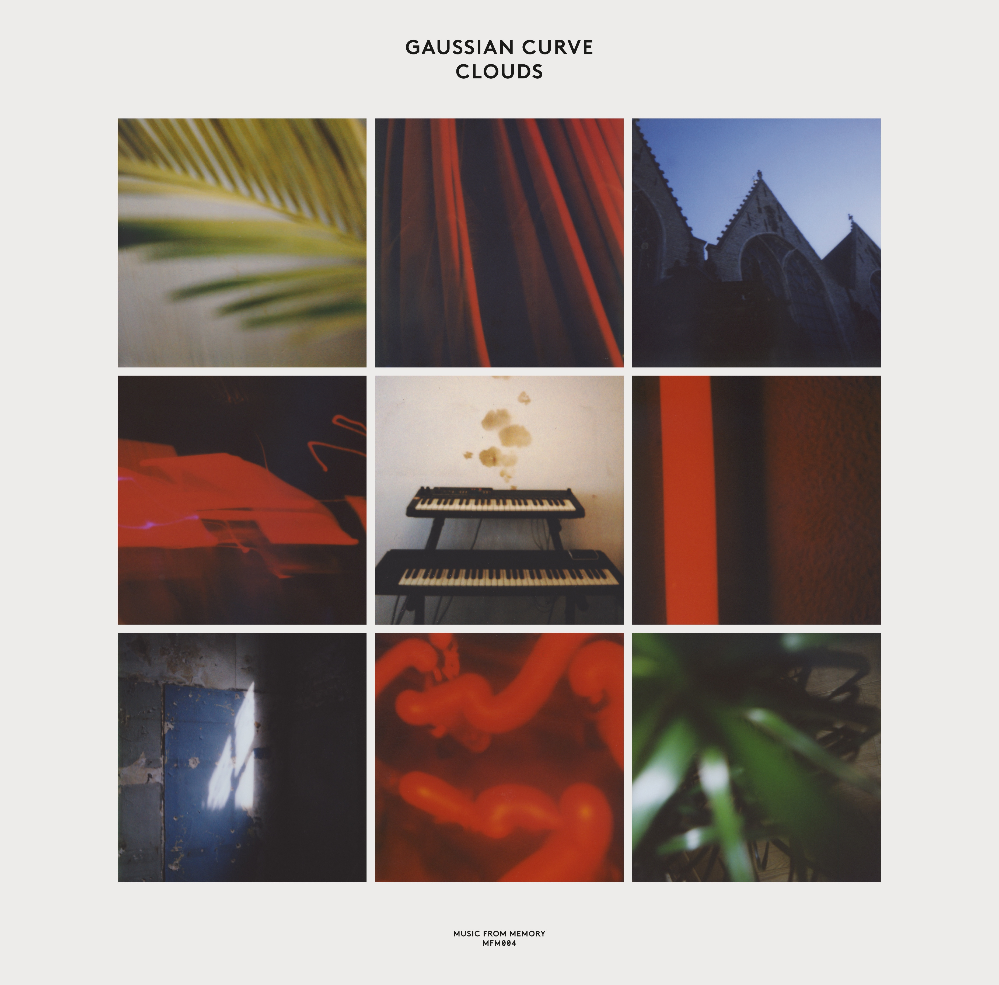

Gaussian Curve- Clouds



Género: Ambient
Sello: Music From Memory
Año: 2014
Total de pistas: 8
Información de Producción
| Campo | Información |
|---|---|
| Sello | Music From Memory |
| Año | 2014 |
| Género | Ambient |
| Total de pistas | 8 |
| Productores | Gordon Pohl, Marco Sterk |
| Masterización | Wouter Brandenburg |
| Artistas Adicionales | |
| Artwork Uncredited | Commission |
| Lacquer Cut By | Rand (5) |
| Mastered By Uncredited | Wouter Brandenburg |
| Mixed By, Producer Additional Production | Gordon Pohl |
| Photography By | Jamie Tiller |
| Written-By, Performer | Gigi Masin, Jonny Nash |
| Written-By, Producer, Photography By, Performer | Marco Sterk |
Tracklist
1. Talk to the Church [2:26] | 📺 YouTube
2. Impossible Island [7:28] | 📺 YouTube
3. Dewdrops [1:44] | 📺 YouTube
4. Ride [5:09] | 📺 YouTube
5. Broken Clouds [5:24] | 📺 YouTube
6. Unsolved [2:48] | 📺 YouTube
7. The Longest Road [7:18] | 📺 YouTube
8. Red Light [6:03] | 📺 YouTube